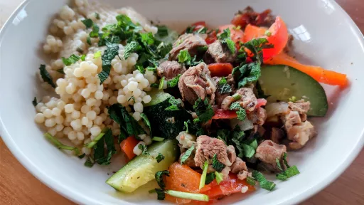

Summer tagine of lamb, courgettes, peppers and mint
2 hr
Serves 4-6
Moroccan

Summer tagines using seasonal vegetables are often quite light and colourful. Other vegetables that might be added to this tagine include tomatoes, aubergines and peas. This dish is particularly good served with wedges of lemon to squeeze over it, or with finely shredded preserved lemon sprinkled over the top.
Ingredients
3-4tbsp olive oil
1
onion, roughly chopped
4cloves garlic, roughly chopped
1tsp cumin seeds
1tsp coriander seeds
1tsp dried mint
thumb-sized piece fresh ginger, peeled and finely chopped or grated
750g lean lamb, cut into bite-sized pieces
sea salt and freshly ground black pepper
2small courgettes, sliced thickly on the diagonal
1
red or green (bell) pepper, deseeded and cut into thick strips
4
tomatoes, skinned, deseeded and cut into chunks
small bunch fresh flat-leaf parsley, roughly chopped
small bunch fresh mint leaves, roughly chopped
1
lemon, cut into quarters, to serve
Instructions
Heat the olive oil in a tagine or a heavy-based casserole. Stir in the onion, garlic, cumin and coriander seeds, dried mint and ginger. Once the onion begins to soften, toss in the meat and pour in enough water to just cover it. Bring the water to the boil, reduce the heat, cover with a lid and cook gently for about 1½ hours
.
Season the cooking juices with salt and pepper. Add the courgettes, pepper and tomatoes, tucking them around the meat (add a little more water if necessary). Cover with a lid again and cook for about 15 minutes
, until the courgettes and pepper are cooked but retain a bite.
Toss in some of the chopped parsley and fresh mint, sprinkle the rest over the top and serve immediately with lemon wedges to squeeze over the dish.
This summery tagine is best accompanied by a fresh green salad of young beetroot/beets, spinach and lettuce leaves.